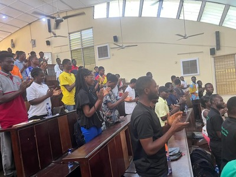

Operational strategy. Program execution. Partnership growth.
Designing resilient systems that turn ambitious ideas into measurable outcomes.
Prince Sakyi Oppong is a senior operations leader with 13+ years of experience across agriculture, fintech, pensions, and advisory work, known for translating strategy into disciplined execution.
Current focus
Building high-performing operations for agricultural transformation and growth.
What defines the work
Leadership that connects systems, people, and execution.
Operational architecture
Building workflows, KPIs, SOPs, and governance rhythms that keep scale sustainable.
Cross-sector partnership delivery
Leading programs that align partners, institutions, and field teams around clear outcomes.
Capability building
Designing practical training that improves adoption, confidence, and long-term performance.
Professional profile
From claims transformation to agribusiness programs, the pattern is consistent.
Prince brings analytical rigor, strong stakeholder management, and an execution-first mindset to complex environments. His portfolio spans enterprise operations, multimarket coordination, investment advisory support, and community-centered agricultural programs.
- Strategic management and leadership training from KNUST
- First-class grounding in statistics and data-driven decision making
- Experience across consulting, pensions, fintech, and development-focused agriculture


Featured work
Programs and partnerships with visible field impact.

GIZ x Agribusiness Facility for Africa
Climate-resilient goat farming and youth employability
Helped deliver training experiences connecting universities, farmers, and agribusiness opportunity pathways.

Youth engagement
Changing the narrative of livestock farming
Delivered entrepreneurship and agribusiness sessions to 300+ students across agricultural colleges.

Community delivery
Hands-on farmer support with Peace Corps
Strengthened farm management, feeding systems, and sustainability practices at community level.
Operations Strategy
Program Management
Leadership Development
Stakeholder Alignment
Capacity Building
Workflow Optimization
Operations Strategy
Program Management
Leadership Development
Stakeholder Alignment
Next step